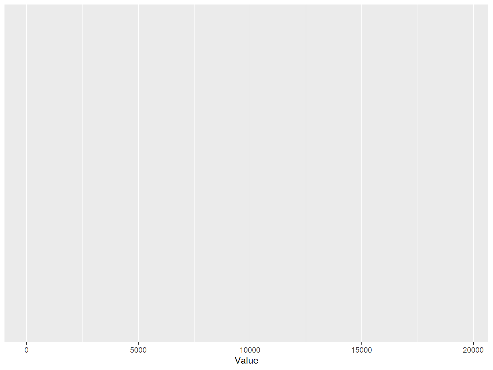
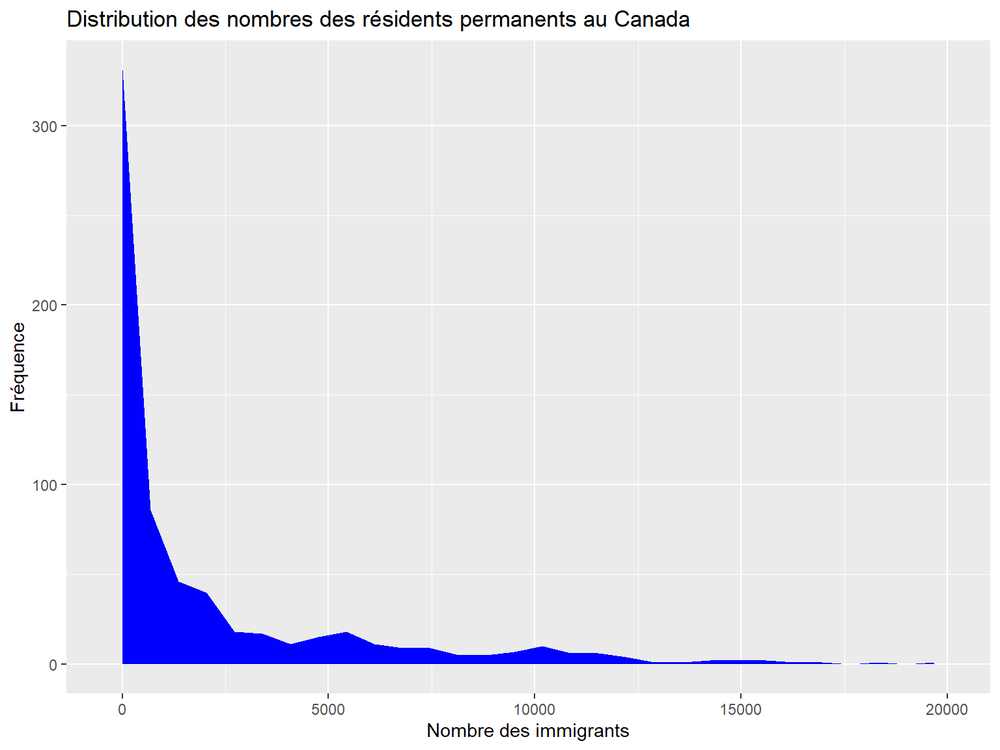
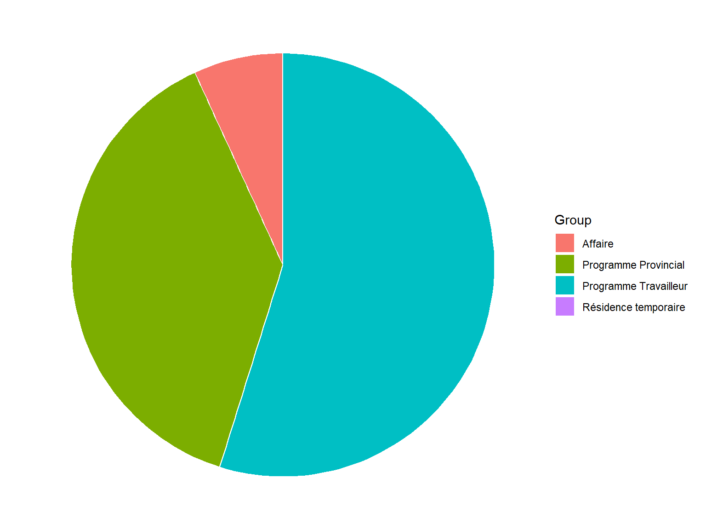
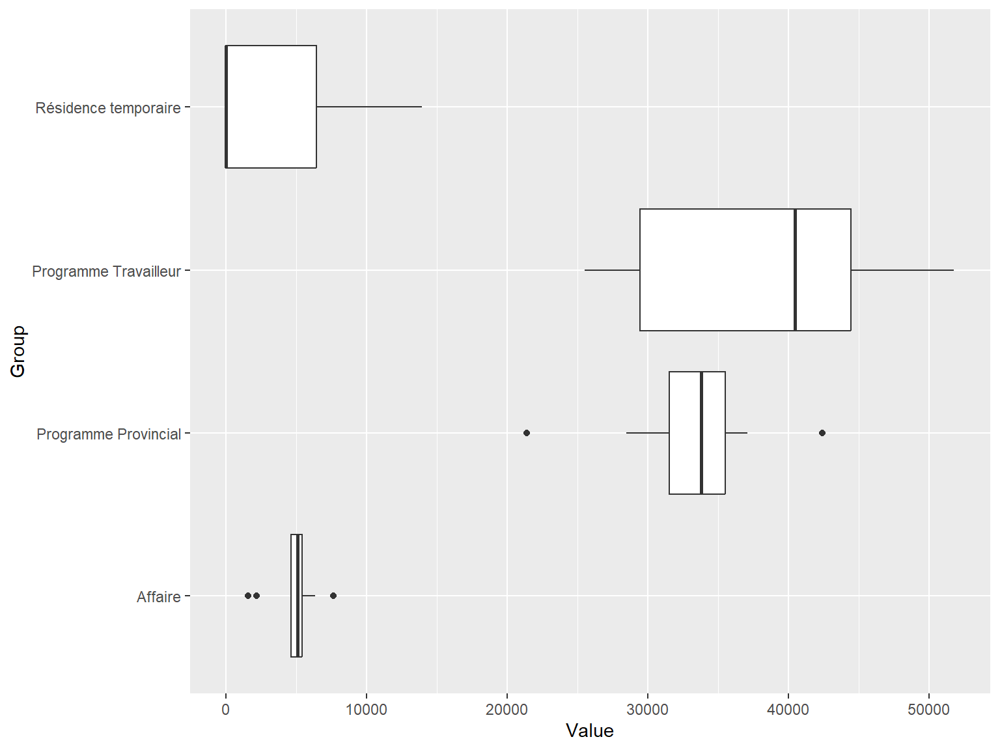
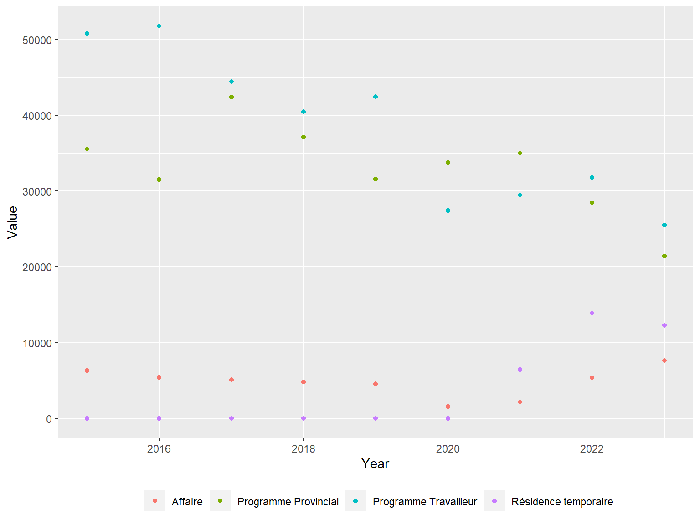
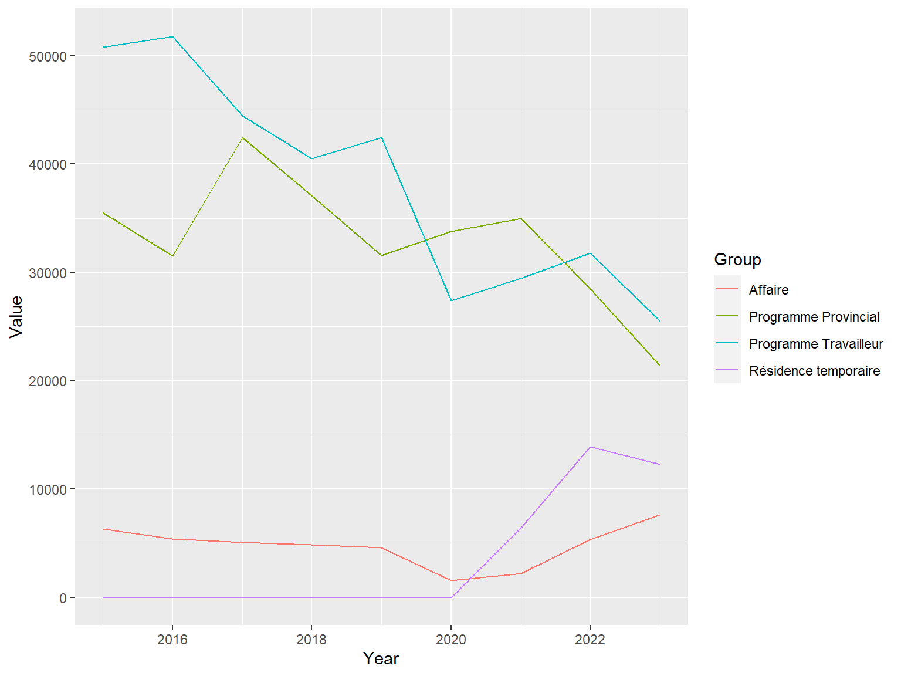
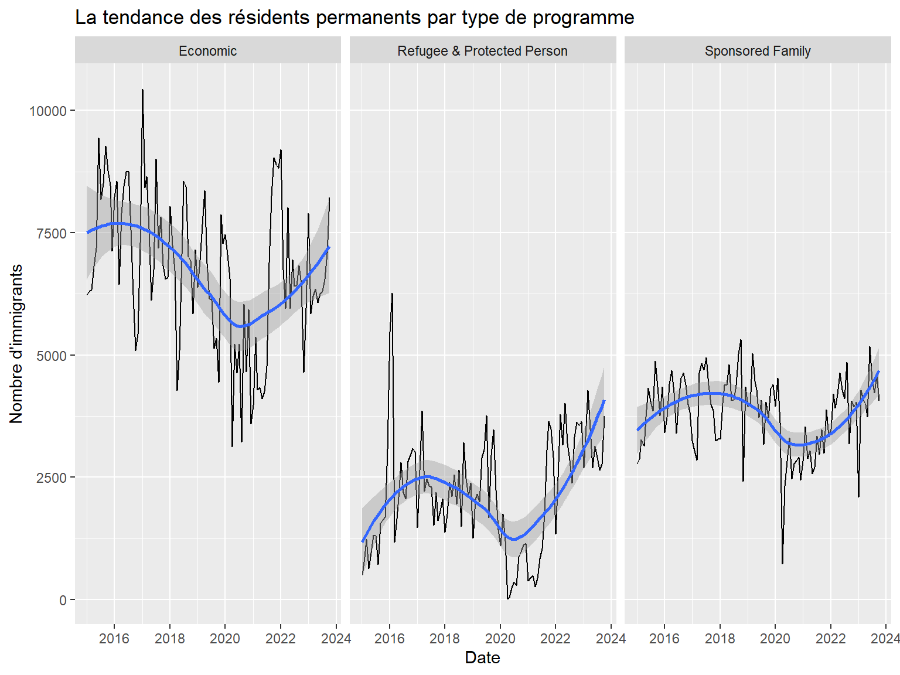
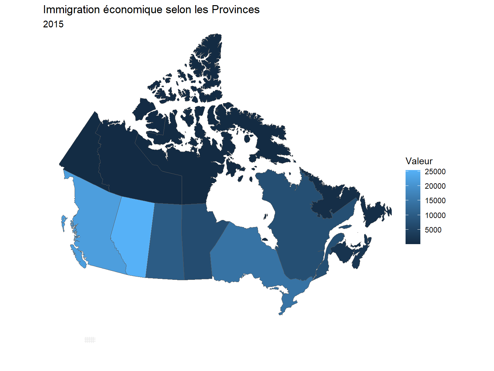

library(lubridate)
library(tidyverse)
library(patchwork)
library(geojsonsf)
library(sf)
PRdataset<-read.csv("./data/ProvincePR.csv")|>
mutate(Date=as.Date(Date), Year=year(Date))|>
group_by(Province, ProgramGroup, ProgramType,Year,Date)|>
summarise(Value=sum(Value, na.rm=T), .groups = "drop")|>
mutate(ProgramGroup=ifelse(ProgramGroup=="Resettled Refugee & Protected Person in Canada","Refugee & Protected Person",ProgramGroup),
Group=recode(ProgramType,
"Business"="Affaire",
"Provincial Nominee Program"="Programme Provincial",
"Temporary Resident to Permanent Resident Pathway"="Résidence temporaire",
"Worker Program"="Programme Travailleur"
))
yeardataset<-PRdataset|>
group_by(Province, ProgramGroup, Group,Year)|>
summarise(Value=sum(Value, na.rm=T), .groups = "drop")
Candataset<-PRdataset|>
group_by(ProgramGroup, Group,Year)|>
summarise(Value=sum(Value, na.rm=T), .groups = "drop")
booking<-read.csv("./data/hotel_bookings.csv")Visualisation: ggplot2
Introduction
Cette section aborde la visualisation ggplot2 dans R
Tout au long de cette section nous utiliserons deux bases de données: immigration et booking.
ggplot2
Pour utiliser les fonctions de ggplot2 il faut d’abord l’installer install.packages("ggplot2"). La grammaire d’un ggplot
Le cadre de base d’un ggplot est ggplot(data, aes(x, y)) - data: prendre les données - aes(x,y): prendre les coordonnées à dessiner
Une variable continue
- Graphique en surface (area band) Pour désiner un graphique en surface on ajoute
geom_area(stat="bin")
p<-ggplot(data=yeardataset, aes(Value))
p
p<-p+
geom_area(stat="bin", fill="blue")
pggtitle() permat d’ajouter un titre au graphique. xlab() et ylab() permettent de donner des titres respectivement l’axe des abscisses et à l’axe des ordonnées.
p<-p+
ggtitle("Distribution des nombres des résidents permanents au Canada")+
xlab("Nombre des immigrants")+
ylab("Fréquence")
p
- Le graphique des densités :
geom_density()
Pour dessiner un graphique des densités on utilise geom_density() et on précise le type de densité à utiliser.
p<-ggplot(data=yeardataset, aes(Value))+
geom_density(kernel="gaussian")+
ylab("Densité")+
xlab("Nombre des immigrants")
p- Graphique en points :
geom_dotplot()
p<-ggplot(data=yeardataset, aes(Value))+
geom_dotplot(fill="red")+
ggtitle("Distribution des nombres des résidents permanents au Canada")+
xlab("Nombre des immigrants")+
ylab("Proprtion")
p- Histogramme Pour dessiner un histogramme, on utilise
geom_histogram()en précisant lebinwdith.
p<-ggplot(data=yeardataset, aes(Value))+
geom_histogram(stat="bin", binwidth = 500, fill="red")+
ggtitle("Distribution des nombres des résidents permanents au Canada")+
xlab("Nombre des immigrants")+
ylab("Fréquence")
pVariable discrète
Pour discrète, on peut dessiner une graphique en bar ou un camembert
- Graphique en bar
Pour dessiner un graphique en bar où on a une variable des labels et une variable des valeurs, on utilise geom_col() et coord_flip() pour changer les abscisses.
bardataset<-Candataset|>filter(Year==2015, ProgramGroup=="Economic")p<-ggplot(bardataset, aes(x=Group, y=Value))+
geom_col()+coord_flip()+xlab("")+ylab("Nombre d'immigrants")
pOn peut aussi utiliser les geom_bar(). Dans ce cas nous n’avons pas besoin de deux variables catégories-valeurs
booking_2015<-read.csv("./data/hotel_bookings.csv")|>
filter(arrival_date_year==2015, arrival_date_month=="July")p<-ggplot(booking_2015, aes(customer_type))+
geom_bar()
p- Graphique en Camembert Avec
geom_bar()etcoord_polar()on peut dessiner un graphique en Camembert
p<-ggplot(bardataset, aes(x="", y=Value, fill=Group))+
geom_bar(stat="identity", width=1, color="white")+
coord_polar("y", start=0)+
theme_void()
p
Pour enlever la légende on utilise theme(legend.position="none")
label_df<-bardataset|>
mutate(csum=rev(cumsum(rev(Value))),
pos=Value/2+lead(csum,1),
pos=if_else(is.na(pos),Value/2,pos))
p<-ggplot(bardataset, aes(x="", y=Value, fill=Group))+
geom_col( width=1, color="white")+
coord_polar("y", start=0)+
theme_void()+
theme(legend.position="none")+
geom_text(data=label_df, aes(y = pos, label = paste(Group,"\n", "Valeur:",formatC(Value, big.mark = " ") )), color = "white", size=3,check_overlap = TRUE) +
scale_fill_brewer(palette="Set1")
pAvec l’argument
palettede la fonctionscale_fill_breweron peut choisir les différentes couleurs désirées:
- Divergente: BrBG, PiYG, PRGn, PuOr, RdBu, RdGy, RdYlBu, RdYlGn, Spectral
- Qualitative: Accent, Dark2, Paired, Pastel1, Pastel2, Set1, Set2, Set3
- Sequentielle: Blues, BuGn, BuPu, GnBu, Greens, Greys, Oranges, OrRd, PuBu, PuBuGn, PuRd, Purples, RdPu, Reds, YlGn, YlGnBu, YlOrBr, YlOrRd
- L’utilisation de
facet_wrap()
La fonction facet_wrap() permet de dessiner séparément un même graphique selon un groupe de variable
bardataset<-Candataset|>filter(ProgramGroup=="Economic")
p<-ggplot(bardataset, aes(x="", y=Value, fill=Group))+
geom_col(width=1, color="gray")+
coord_polar("y", start=0)+
theme_void()+
scale_fill_brewer(palette="Set3")+
facet_wrap(~Year)+
labs(fill="PR Program")
p- Boite à moustache
geom_boxplot()
bardataset<-Candataset|>filter(ProgramGroup=="Economic")
ggplot(bardataset, aes(Group,Value))+geom_boxplot()+coord_flip()
Deux variables continues (X et Y)
- Nuage de points avec
geom_point()
bardataset<-Candataset|>filter(ProgramGroup=="Economic")
p<-ggplot(bardataset, aes(x=Year, y=Value, color=Group))+
geom_point()+
labs(color="")+
theme(legend.position = "bottom")
p
- graphique en line
geom_line()
p<-ggplot(bardataset, aes(x=Year, y=Value, color=Group))+
geom_line()
p
geom_line()avecfacet_wrap()
p<-ggplot(bardataset, aes(x=Year, y=Value ))+
geom_line()+
facet_wrap(~Group)
p- Ajouter une droite de regression
PRdataset_mois<-PRdataset|>group_by(ProgramGroup, Year,Date)|>
summarise(Value=sum(Value, na.rm=T), .groups = "drop")p<-ggplot(PRdataset_mois, aes(x=Date, y=Value ))+
geom_line()+
xlab("Date")+
ylab("Nombre d'immigrants")+
labs(title="La tendance des résidents permanents par type de programme")+
facet_wrap(~ProgramGroup)+
geom_smooth()
p
- Cartographie avec
geom_sf()
Pour cet exemple, nous servirons de la librairie geojsonsf pour lire les fichier json en ligne. Nous pouvons télécharger les shapefiles sur le site de highcharts ou les lire directement.
Pour trouver les themes de ggpplot
long <-unlist(map(proddata$geometry,1))
lat <- unlist(map(proddata$geometry,2))
pcan<-ggplot(data=proddata)+geom_sf(aes(fill=Value))+
coord_sf(xlim=c(min(long),max(long)+200 ),
ylim=c(min(lat)-50,max(lat)+200 ))+
labs(title="Immigration économique selon les Provinces",
subtitle = "2015",
fill="Valeur")+
theme_minimal()
pcan
Exemple du Togo sur l’éducation par région, nous utilisons le taux de non-scolarisation au Togo provenant des données de l’Unicef.
tg_sf<-geojson_sf("./data/tg-all.geo.json")|>
left_join(
tibble(name=c("Maritime","Plateaux","Centre","Kara","Savanes" ), primaire=c(4,6,6,16,15), secondaire=c(10,8,8,16,25), lycee=c(27,31,24,32,38)),
by="name")coord<-st_coordinates(tg_sf$geometry)
long <-coord[,1]
lat <- coord[,2]
#Taux de non-scolarisation (secondaire)"
#ggpubr::ggarrange(p1,p2,p3, ncol=3, widths = c(3, 3,3))
p1<-ggplot(data=tg_sf)+geom_sf(aes(fill=primaire))+
coord_sf(xlim=c(min(long),max(long)+200 ),
ylim=c(min(lat),max(lat)+200 ))+
labs(title="Taux de non-scolarisation\nPrimaire",
#subtitle = "2021",
fill="Taux(%)")+
theme_minimal()
p2<-ggplot(data=tg_sf)+geom_sf(aes(fill=secondaire))+
coord_sf(xlim=c(min(long),max(long)+200 ),
ylim=c(min(lat),max(lat)+200 ))+
labs(title="Taux de non-scolarisation\n Secondaire",
fill="Taux(%)")+
theme_minimal()
p3<-ggplot(data=tg_sf)+geom_sf(aes(fill=lycee))+
coord_sf(xlim=c(min(long),max(long)+200 ),
ylim=c(min(lat),max(lat)+200 ))+
labs(title="Taux de non-scolarisation\nLycée",
#subtitle = "2021",
fill="Taux(%)")+
theme_minimal()p1+p2+p3Reference
- H. Wickham. ggplot2: Elegant Graphics for Data Analysis. Springer-Verlag New York, 2016.